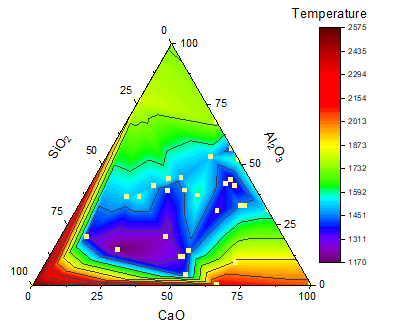
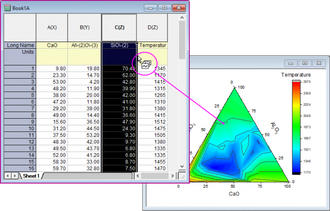
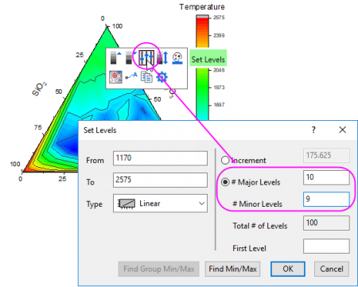
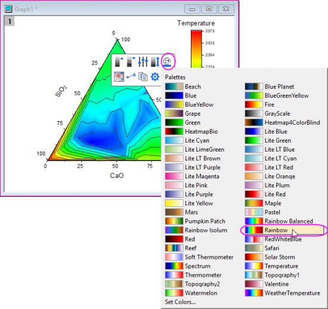
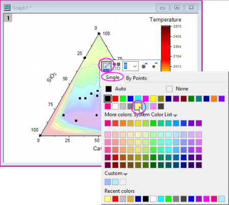
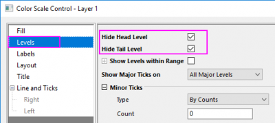

Ternäres Konturdiagramm
TernaryContour
Zusammenfassung
Dieses Tutorial zeigt Ihnen, wie Sie ein ternäres Konturdiagramm erstellen und ein Punktdiagramm darüber legen.
-
-
- 
Origin-Version mind. erforderlich: 2020
Was Sie lernen werden
- Ein ternäres Konturdiagramm erstellen
- Ein Punktdiagramm per Drag&Drop überlagern
- Das Diagramm mit den Minisymbolleisten benutzerdefiniert anpassen
Schritte
Dieses Tutorial basiert auf dem Projekt: <Origin-Verzeichnis>\Samples\Tutorial Data.opj.
Sie können dieses Diagramm auch im Lernzentrum finden. (Wählen Sie Hilfe: Lernzentrum im Menü oder drücken Sie die Taste F11. Suchen Sie dann nach dem Stichwort "Ternary Contour".)
- Öffnen Sie Tutorial Data.opj und navigieren Sie zum Ordner Ternary Contour im Projekt Explorer (PE).
- Aktivieren Sie Book1, markieren Sie das gesamte Arbeitsblatt und wählen Sie Zeichnen: Kontur: Ternär Kontur, um ein ternäres Konturdiagramm zu erstellen. Jetzt überlagern Sie das ternäre Konturdiagramm mit einem Punktdiagramm. Klicken Sie auf den Spaltenheader von col(C), um ihn auszuwählen, und fahren Sie dann mit dem Cursor über den rechten Rand der Spalte. Das Symbol für den Drag&Drop von Daten
 wird angezeigt. Drücken Sie die linke Maustaste, um diese Daten per Drag&Drop in ternäre Koordinaten zu ziehen.
wird angezeigt. Drücken Sie die linke Maustaste, um diese Daten per Drag&Drop in ternäre Koordinaten zu ziehen.

- Kontur- und Punktdiagramm können jetzt benutzerdefiniert angepasst werden. Klicken Sie auf das ternäre Konturdiagramm und in der Minisymbolleiste auf die Schaltfläche Ebenen festlegen, um die Haupt- und Nebenebenen, wie unten, festzulegen:

- Bestätigen Sie mit OK, um das Dialogfeld Ebenen festlegen zu schließen. Klicken Sie erneut auf das ternäre Konturdiagramm. Klicken Sie in der Minisymbolleiste auf die Schaltfläche Paletten und wählen Sie Rainbow in der Liste aus.

- Klicken Sie auf einen der Streupunkte im Diagramm und in der Minisymbolleiste auf die Schaltfläche Symbolrandfarbe, um die Symbolfarbe auf Hellgelb zu setzen.

- Klicken Sie doppelt auf die Farbskala, um den Dialog Eigenschaften Farbskala zu öffnen. Wählen Sie Ebenen im linken Bedienfeld, aktivieren Sie das Kontrollkästchen Erste Ebene ausblenden und Letzte Ebene ausblenden klicken Sie auf OK, um den Dialog zu schließen.

- Das Diagramm sollte nun folgendermaßen aussehen: